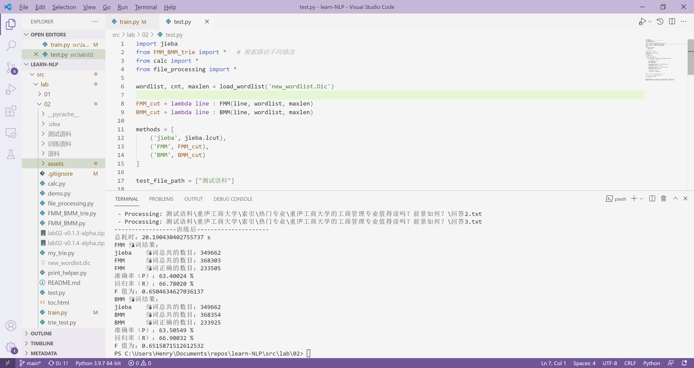

自然语言处理学习
自然语言处理实验
自然语言处理：实验一
编写程序自动抓取多网页内容
| 学院 | 信息工程学院 |
|---|---|
| 指导教师 | 孙媛 |
| 班级 | 19 级计算机科学与技术 1 班 |
| 学生姓名 | John Doe |
| 学号 | 19000000 |
日期： 2021 年 9 月 29 日
摘要
略
目录
略
一、实验内容
学会使用 Python（或其他编程语言）编写网络爬虫程序，能对网站格式进行解析，爬取相关内容并过滤，建立语料库。
要求：能够自动爬取多个网页，过滤掉图片、视频信息，存取文中中的 title，context，URL 等关键文本字段，存取到不同的文本和目录中。
提交内容：
- 实验报告
- 程序代码
- 爬取的语料
本次实验选取了问答平台 知乎 作为实验对象。作为一个问答平台，知乎网站上内容的基本组成为问题，以及若干相应的答案；每个问题及问题下的回答均具有唯一的数字 URL 与之对应；此外，知乎 存在话题的概念，每个话题下可以包含一系列问题。
二、实验原理
互联网上的网页通过超链接建立起彼此之间的联系。对于一个页面，通过检索其上存在的链接，并逐个访问这些链接、重复上述操作，就能够遍历该页面所在的整个网络。
传统的互联网页面的大多数元素通常包含在 HTML 文档源代码中，在了解了目标网站的 HTML 页面结构后，就能够如同在树上摘果子一般，从中提取自己需要的内容。
不过，现代网站多大量采用动态网页技术，以便更及时、更具针对性的向用户呈现内容，抑或作为一种反制网页爬取的对策。即，程序获取到的 HTML 源代码结构，并不是用户在浏览器中实际所看到的样子。一般来说，社交、购物网站经常使用这样的技术。若需从动态网站上获得信息，最理想的办法是使用网站方提供的应用程序接口；当这样的接口不存在时，则只能通过应用程序模拟真实用户使用浏览器时的操作，从而获得到页面上的元素。
除此之外，许多网站也会要求事先用户进行登录，之后才会提供更多信息。网站一般通过 Cookie 技术识别用户，因此可以通过在程序中使用正常登录后得到的 Cookie 来进行模拟登录。
三、整体框架
实验目的是获取语料。在实验开始前，要先决定目标网站上感兴趣的信息，以及存储时使用的结构。对于本次实验的对象——知乎问答社区，感兴趣的信息主要是其上的问题以及相应的答案。不过为了使获取得到的内容更具相关性，选择一个话题作为研究对象更为经济。
根据前文所述，知乎问答社区的问题具有唯一的 URL，每个问题（或问题下的某个回答）可以视作信息抓取过程中最核心的着手对象。
截止实验时，进入知乎社区的话题页，即可以得到关于话题的简介，以及话题下的热门问题。
对于某一个话题下信息的存储，设计了如下的目录结构：
TOPIC_ID
│
├── URL
├── DETAILS
├── SUMMARY
│
├── QUESTIONS
│ │
│ ├── QUESTION_ID_1
│ │ ├── ANSWER_ID_1
│ │ │ └── ANSWER_DETAILS
│ │ ├── ANSWER_ID_2
│ │ │ └── ANSWER_DETAILS
│ │ ....
│ │
│ ├── QUESTION_ID_2
│ │ ├── ANSWER_ID_1
│ │ │ └── ANSWER_DETAILS
│ │ ├── ANSWER_ID_2
│ │ │ └── ANSWER_DETAILS
│ │ ....
│
....
四、主要程序模块
程序依赖
引入依赖：
import json
import os
import time
import requests
from bs4 import BeautifulSoup
from pip._vendor.distlib.compat import raw_input
from selenium import webdriver
from urllib.error import HTTPError
- 调用 Python 的 OS 模块用于操作主机的文件系统，用于目录建立、删除文件等操作。
- 使用 Time 模块进行计时，进而实现内容抓取操作之间具有一定的时间间隔，减少被反抓取对策侦测到的可能。
- Requests 模块用于向指定 URL 发出请求，获得到页面源代码。
- 使用 BeautifulSoup 解析 HTML 文档的结构，以便对页面中指定内容进行提取。
- Selenium 模块的 webdriver 类可以模拟用户使用浏览器时的操作，如拖动页面、点击等事件。
主要过程
程序主要过程如下：
# 备选话题链接：
urls = [
"https://www.zhihu.com/topic/19857419/hot", # 民大链接
"https://www.zhihu.com/topic/19606319/hot", # 川大链接
"https://wWw.zhihu.com/topic/19792394/hot", # 西南交大链接
"https://www.zhihu.com/topic/19687047/hot", # 西南财大链接
"https://www.zhihu.com/topic/19690586/hot", # 西南石油大学链接
"https://www.zhihu.com/topic/19694756/hot", # 川师链接
"https://www.zhihu.com/topic/19686215/hot" # 成都理工大链接
]
url = "https://www.zhihu.com/topic/19857419/hot"
header = {
"User-Agent":
"Mozilla/5.0 (Windows NT 10.0; Win64; x64) "
"AppleWebKit/537.36 (KHTML, like Gecko) "
"Chrome/80.0.3987.87 Safari/537.36" }
soup = fetchPageAndMakeSoup(url, header)
hrefs, paths = getFirstTitle(soup)
# 取得热门回答的链接及写入路径
href = hrefs[3]
path = paths[3]
dealWithTopAnswers(href, path)
子过程介绍
fetchPageAndMakeSoup 能够以指定的 header 爬取指定 HTTP 协议下某 URL 对应的页面源代码。之后，根据页面内容创建一个 BeautifulSoup 对象供后续分析使用。
from urllib.error import HTTPError
def fetchPageAndMakeSoup(url, header):
try:
r = requests.get(url, headers=header)
r.encoding = r.apparent_encoding
content = r.text
except HTTPError as e:
return None
bsObject = BeautifulSoup(content, "lxml")
return bsObject

知乎话题页下的若干板块如图所示：

getFirstTitle 可以从知乎话题页分析出主要的几个板块，及其对应的链接。
def getFirstTitle(soup):
# 获取一级标题：索引、简介、讨论
titles_href = []
titles_path = [] # 实际上存的是一级标题的路径噢！
data = soup.find("div", id="TopicMain")
title = data.find_all("li", class_="Tabs-item Tabs-item--noMeta")
for each in title:
print(each.find("a").contents) # 获取 TITLE 内容：索引、简介、讨论、精华、等待回答
print(each.find("a")['href']) # 需要加上 zhihu.com前缀
path_of_folder = "." + "/" + "".join(each.find("a").contents)
createFolder(path_of_folder)
href = "http://zhihu.com" + each.find("a")['href']
writeHrefToFiles(path_of_folder + "/" + "href.txt", href)
titles_href.append(href)
titles_path.append(path_of_folder)
return titles_href, titles_path
该函数在当前路径下（.py 脚本的运行处）创建目录，名称于上述二级标题相同，并且将各个 URL 以文本形式存放在相应的文件夹中。同时，通过 titles_href 和 titles_path 来对“URL 链接”和“存储路径”进行存储，以便进行后续的操作。
createFolder 函数首先判断路径下是否存在该同名目录，若不存在，则调用 os 模块的 makedirs() 方法进行创建。
def createFolder(path):
# 创建文件夹
folder = os.path.exists(path)
if not folder:
os.makedirs(path) # makedirs 创建文件时如果路径不存在会创建这个路径
print("--- new folder... ---")
print("--- OK ---")
writeHrefToFiles 将 href 链接写入指定路径的 TXT 文件中。
def writeHrefToFiles(path, href):
# 将 href 链接写入指定路径的 TXT 文件中
# 使用 with open ... as f 可以保证资源在使用完成后得到释放
with open(path, "w") as f:
f.write(href)
处理“索引”标签下的内容，主要目的为获取二级标题，问题标题。获取二级标题后，便于对各个问题进行分类，便于后续进一步的处理。

# 获取二级标题，问题标题
# 获取二级标题后，便于对各个问题进行分类，便于后续进一步的处理。
def getSecondTitle(soup, path):
# 首先通过 class 标签获取二级标题，如下：
data = soup.find("div", class_="Card TopicIndex-content")
# details = data.find_all("h2", class_ = "TopicIndexModule-title")
details = data.find_all("div", class_="TopicIndexModule")
index = 1
driver = webdriver.Firefox()
# 通过相应的 class 获取到所有文章内容后，通过区间 for 循环遍历所有内容
for val in details:
# 索引标题下的子标题：就读体验，校园设施…………
# 具体的标签如同 div h2 或者是 class 名 随着页面变化而变化
# 此处是对大学页面下的索引进行处理。
second_title = val.find("h2", class_="TopicIndexModule-title")
print(second_title.contents)
articles_titles = val.find_all("div", class_="TopicIndexModule-item") # 多个标题
path_of_second_title = path + "/" +"".join(second_title.contents)
createFolder(path_of_second_title)
for article in articles_titles:
article_name = article.find("a").contents # 每个标题 列表形式
article_href = article.find("a")['href'] # 附加的 href
print(article_name)
print(article_href)
print(path_of_second_title)
path_of_article_name = path_of_second_title + "/" + "".join(article_name)
path_of_article_name = dealWithPath(path_of_article_name)
print(path_of_article_name)
createFolder(path_of_article_name)
href = "http://zhihu.com" + article_href
# 获取了回答的名称以及链接以后
# 由于路径可能存在不被文件系统允许的特殊符号
# 因此需要对文件名称进行一定的处理
path_of_href = dealWithPath(path_of_article_name + "/" + "href.txt")
writeHrefToFiles(path_of_href, href)
# 在存储了具体的以问题名称为名的文件夹和其 URL后，
# 我们就可以对问题页面进行处理并且提取其中各个用户的回答，代码如下：
time.sleep(3)
driver.get(href)
# 由于知乎的问题页面存在动态加载，
# 因此需要通过 selenium 来模拟浏览器进行向下滑动页面的操作
# 以获取所有的回答，通过 simulatePageScrolling()函数进行实现。
simulatePageScrolling(driver ,20)
html = driver.page_source
soup1 = BeautifulSoup(html, 'lxml')
# 将内容写入 TXT 文件
writeContentToFiles(soup1, path_of_article_name)
dealWithPath 函数：special_characters 这一列表中包含文件系统路径不可使用的特殊符号，则对路径进行遍历，删除其中存在的特殊符号即可。
def dealWithPath(path):
# 删除路径中可能不合法的特殊字符
special_characters = ["?", "/", ":", "*", "<", ">", "|"]
for each in special_characters:
path = path.replace(each, "")
return path
simulatePageScrolling 模拟浏览器进行向下滑动页面的操作。
def simulatePageScrolling(driver, times):
for i in range(times + 1):
driver.execute_script("window.scrollTo(0, document.body.scrollHeight);")
time.sleep(1)
将回答写入TXT的具体实现过程如下：
def writeContentToFiles(soup, path):
articles = soup.find_all("div", class_="RichContent-inner")
index = 1
tag = 0
for val in articles:
to_path = path + "/" + "回答" + str(index) + ".txt"
index += 1
# if val.find("p").string is None:
# continue # 无内容， 不进行处理
with open(to_path, "w", encoding="utf-8") as f:
for para in val.find_all("p"):
if para.string is not None:
f.write(para.string)
f.write("\n")
if os.stat(to_path).st_size == 0:
os.remove(to_path) # 删除空文件
此处需要注意打开文件与 for 循环的位置，否则会出现将多个问题写入同一个 TXT 文件中、或着将一个问题拆分成多个 TXT 文件进行存储的情况。
通过 index 来区分不同的回答，同时避免在写入文件时发生重名的现象。通过 os 模块来对文件的大小进行判断，若其大小为 0（空数据），则将该文件删除，同时应注意，此处的删除文件操作应在 with open 对该文件的操作完全结束后再进行。
接下来对简介二级标题进行操作：

def dealWithIntro(href, path):
path_of_href = path + "\\" + "href.txt"
path_of_txt = path + "\\" + "简介.txt"
with open(path_of_href, "w", encoding = "utf-8") as f:
f.write(href)
url_intro = href
r = requests.get(url_intro, headers=header)
r.encoding = r.apparent_encoding
content = r.text
soup = BeautifulSoup(content, "lxml")
#print(soup)
intro_names = soup.find_all("div", class_="TopicCommonIntroTable-item")
with open(path_of_txt, "w", encoding = "utf-8") as f:
for val in intro_names:
intro_name = val.find("div", class_="TopicCommonIntroTable-name")
intro_attributes = val.find("span", class_="TopicCommonField-topicText")
if intro_attributes is None:
intro_attributes = val.find("div", class_="TopicCommonField-text")
print(intro_name.contents)
print(intro_attributes.contents)
intro_name_str = "".join(intro_name.contents).rstrip("\n")
#print(intro_name_str)
f.write(intro_name_str)
#f.write("".join(intro_name.contents).rstrip("\n"))
f.write(":"+" ")
#intro_attributes_str = "".join(intro_attributes.contents)
if intro_name_str == "学校官网": #进行特判
intro_attributes_str = intro_attributes.find("a")['href']
else:
intro_attributes_str = "".join(intro_attributes.contents)
#print(intro_attributes_str)
f.write(intro_attributes_str)
#f.write("".join(intro_attributes.contents))
f.write("\n")
大部分操作于上文相同，但此处存在相同位置的内容标签不同的情况，需要对其进行特判。同时，由于学校官网的编码形式可能与其他内容的编码不同，所以在打开文件进行写操作时需要统一编码格式为“UTF-8”。
对“精华”选项卡进行处理：

def dealWithTopAnswers(href, path): #处理精华标题
driver = webdriver.Firefox()
driver.get(href)
simulatePageScrolling(driver, 20)
html = driver.page_source
soup = BeautifulSoup(html, 'lxml')
# 得到热门问题的列表
articles = soup.find_all("div", itemtype="http://schema.org/Question")
print(articles)
for val in articles:
question_href = val.find("a")['href']
quesiton_title = val.find("a").contents
question_id = question_href[question_href.find('question/')+len('question/'):]
print(question_href)
print(quesiton_title)
path_of_question = dealWithPath(path + "/" + "".join(quesiton_title))
print(path_of_question)
createFolder(path_of_question)
href = "https:" + question_href
path_of_href = dealWithPath(path_of_question + "/" + "href.txt")
# href be like: https://www.zhihu.com/question/28580571
writeHrefToFiles(path_of_href, href)
time.sleep(3)
driver.get(href)
simulatePageScrolling(driver, 20)
# 得到某一热门问题的页面内容
html = driver.page_source
soup1 = BeautifulSoup(html, 'lxml')
# 将内容存储到文件
# path_of_answers = path_of_article_name + "\\" + "回答" + str(index) + ".txt"
writeContentToFiles(soup1, path_of_question)
大部分操作与对索引进行的操作相同，变化的仅是标签的属性，则不再进一步的阐述。
实验结果如下：


另注：由于“讨论”和“等待回答”选项卡中会出现大量的同之前相同的提问，因此不再对这两个二级标题进行爬取，一方面可以加快程序的运行事件，同时减少数据的冗余量和重复度。
五、实验结果
详细分析实验结果，除了包含定量评价，还要有定性评价。 对存在的问题，要着重剖析。
实验结果的展示
本次爬虫选取的是主题是中国部分大学，选取的在知乎上较为有热度的回答。
以下使用的图片皆使用中央民族大学进行举例，其他高校结构以及爬去结果相同。
在每个文件夹依据大学主题的 5 个分支建立 5 个分文件夹，分别是索引、简介、讨论、精华和等待回答。
注：由于等待回答、讨论并非重点内容，所以文件夹下面仅有存放相应链接的 href.txt 文件。
简介
简介下存储相应链接的 href.txt 文件和存放简介的 简介.txt。
精华
在精华下是由问题名称构成的文件夹名。
索引
在索引下是由其他专业、就读体验、校园生活、校园设施、毕业发展、热门专业和考研相关这几个子话题文件夹构成，每个子话题文件夹下面都有很多问题，其文件夹名是由问题名称构成的，并配有存储相应链接的 href.txt 文件。
问题
每个问题下是由 txt 文本构成的回答：回答1.txt 回答2.txt 回答3.txt，以及存储相应链接的 href.txt 文件
实验结果的分析
本次实验爬取部分高校在知乎问答平台上收到的一部分评价作为语料，在练习网页抓取技术的同时，也为未来自然语言处理时提供了非常重要的原始材料。
存在的问题
爬取的问题比较少，信息量还有待提高，如点赞数、评论数等，未来进行舆情分析时可以增添更多可分析的要素。
六、总结
本次实验选择知乎问答社区为内容抓取对象。首先，程序读入待抓取的话题页链接或话题页链接列表。随后，对于每一个链接，采用 UA 模拟的方式获取到页面源代码。话题页中可以得到关于话题的简介、以及热门问题的链接。获取到以上二者后，再次抓取热门问题页面的内容，并写入到本地文件。
参考文献
- https://ithelp.ithome.com.tw/articles/10225429
- https://marcovaldong.github.io/2016/08/18/Python爬虫爬取知乎小结/
自然语言处理
实验二
| 学院 | 信息工程学院 |
|---|---|
| 指导教师 | 孙媛 |
| 班级 | 19 级计算机科学与技术 1 班 |
| 学生姓名 | John Doe |
| 学号 | 19000000 |
日期： 2021 年 10 月 21 日
目录
一、实验内容
实验内容：
- 对语料库的文本进行分词并存储。
- 分别采用正向最大匹配算法、逆向最大匹配算法进行分词。以 jieba 分词的分词结果作为标准语料，计算P、R、F值。
二、实验原理
基于词典的切分方法
句子 \(S = c_1 c_2 \cdots c_n\)：句子由若干字符 \(c\) 组成。
假设词 \(w_i = c_1 c_2 \cdots c_m\)，其中 \(m\) 为词典中最长词的字数。
当前的分词算法主要分为两类——基于词典的规则匹配方法和基于统计的机器学习方法。
基于词典的分词算法，本质上就是字符串匹配。将待匹配的字符串基于一定的算法策略，和一个足够大的词典进行字符串匹配，如果匹配命中，则可以分词。根据不同的匹配策略，又分为正向最大匹配法，逆向最大匹配法，双向匹配分词，全切分路径选择等。
最大匹配法（Maximum Matching, MM）主要分为三种：
- 正向最大匹配算法（Forward MM, FMM）：从左到右对语句进行匹配，匹配的词越长越好。这种方式切分会有歧义问题出现。
- 逆向最大匹配算法（Backward MM, BMM）：从右到左对语句进行匹配，同样也是匹配的词越长越好。这种方式同样也会有歧义问题。
- 双向最大匹配算法（Bi-directional MM）：则同时采用正向最大匹配和逆向最大匹配，选择二者分词结果中词数较少者。但这种方式同样会产生歧义问题。由此可见，词数少也不一定划分就正确。
全切分路径选择，将所有可能的切分结果全部列出来，从中选择最佳的切分路径。分为两种选择方法：
- n 最短路径方法。将所有的切分结果组成有向无环图，切词结果作为节点，词和词之间的边赋予权重，找到权重和最小的路径即为最终结果。比如可以通过词频作为权重，找到一条总词频最大的路径即可认为是最佳路径。
- n 元语法模型。同样采用 n 最短路径，只不过路径构成时会考虑词的上下文关系。一元表示考虑词的前后一个词，二元则表示考虑词的前后两个词。然后根据语料库的统计结果，找到概率最大的路径。
此次实验默认使用的是实验指导书中提供的词典，分别采用正向最大匹配算法、逆向最大匹配算法进行分词。
jieba 分词库
jieba 支持三种分词模式:
- 精确分词，试图将句子最精确的切开，适合文本分析
- 全模式，把句子中所有的可以成词的词语都扫描出来, 速度非常快，但是不能解决歧义
- 搜索引擎模式，在精确模式基础上，对长词进行再次切分，提高recall，适合于搜索引擎。
扩充词典
将过程中遇到的“新词”添加进词典，可以提高文本识别的准确率。
准确率、精确率、召回率及 F 值
机器学习中的分类评估包含有以下这么几个概念。
准确率（Accuracy），即正确分类的数量占总的数量的比值，是一个用来衡量分类器预测结果与真实结果差异的一个指标，越接近于 1 说明分类结果越准确。
二分类的结果有以下几种可能性：
- True Positive（TP）：表示将正样本预测为正样本，即预测正确；
- False Positive（FP）：表示将负样本预测为正样本，即预测错误；
- False Negative（FN）：表示将正样本预测为负样本，即预测错误；
- True Negative（TN）：表示将负样本预测为负样本，即预测正确；
精确率（Precision）计算的是预测对的正样本在整个预测为正样本中的比重，而召回率（Recall）计算的是预测对的正样本在整个真实正样本中的比重。因此，一般来说，召回率越高，意味着模型找寻正样本的能力越强。
准确率、精确率、召回率的计算公式如下：
\[ \begin{align} \text{Accuracy} = & \frac{TP+TN}{TP+FP+FN+TN} \\ \text{Precision} = & \frac{TP}{TP+FP} \\ \text{Recall} = & \frac{TP}{TP+FN} \\ \end{align} \]
值得注意的是，在实际任务中，并不明确哪一类是正样本或哪一类是负样本，所以对于每个类别，都可以计算其各项指标。
实际评估一个系统时，应同时考虑 P 和 R，但同时要比较两个数值，很难做到一目了然。所以常采用综合两个值进行评价的办法，综合指标 F 值就是其中一种。计算公式如下：
\[ \text{F-score} = (1+\beta^2)\frac{P \times R}{\beta^2 \times P + R} \]
其中，\(\beta\) 决定对 P 侧重还是对 R 侧重，通常设定为 1、2 或 \(\frac 1 2\)。\(\beta\) 取值为 1，即对二者一样重视，这时的 F-score 称为 \(F_1\) 值。
分词结果的评估
机器学习中二分类的评估标准，无法直接应用于分词。
在对汉语分词性能进行评估时，采用了常用的３个评测指标：准确率（P）、召回率（R）、综合指标 F 值（F）。准确率表示在切分的全部词语中，正确的所占的比值。召回率指在所有切分词语中（包括切分的和不应该忽略的），正确切分的词语所占的比值。准确率描述系统切分的词语中，正确的占多少。召回率表示应该得到的词语中，系统正确切分出了多少。计算公式如下：
\[ P = \frac{\text{准确切分的词语数}}{\text{切分出的所有词语数}} \]
\[ R = \frac{\text{准确切分的词语数}}{\text{应该切分的词语数}} \]
若一字符串的分词结果为一系列单词，设每个单词按照其在文中的起止位置可记作区间 \([i,j]\)（\(0\leq i \leq j \leq n\)），那么标准答案对应的所有区间就可以构成一集合 \(A\)，作为正类，其他的区间则作为负类;同理，根据分词结果，可以得到集合 \(B\)。
\[TP \cup FN = A \]
\[TP \cup FP = B \]
\[A \cap B = TP \]
则对于分词结果，P、R 的计算公式：
\[\text{Precision} = \frac{\vert A\cap B\vert}{\vert B \vert}\]
\[\text{Recall} = \frac{\vert A\cap B\vert}{\vert A \vert}\]
三、整体框架
主要分为功能模块和使用调用。详见主要程序模块。
- FMM、BMM 分词：FMM_BMM.py、FMM_BMM_trie.py
- 多文件处理：file_processing.py
四、主要程序模块
FMM、BMM
从文件中加载字典到 Python 内建的 set 类型，以及进行最大正向匹配（FMM）、最大逆向匹配（BMM）的功能：
def load_wordlist(filename):
wordlist = set()
maxlen = 0
cnt = 0
with open(filename) as f:
# 判断文件首行是否为指定的 'magic code'
if f.readline().strip() == '@Lexicon':
for line in f:
word = line.split()[1]
maxlen = max(maxlen, len(word))
wordlist.add(word)
cnt += 1
# maxlen 为字典中最长词的长度
return wordlist, cnt, maxlen
def add_words(wordlist, cnt, maxlen, new_words):
for w in new_words:
w = w.strip()
if len(w) == 0:
continue
if w.startswith("-") or w.startswith("."):
# 排除可能的特殊符号串，如“----------”
continue
if w.isdigit():
# 同理，排除掉特殊情况，使得字典更具有普遍性
continue
cnt += 1
maxlen = max(len(w), maxlen)
wordlist.add(w)
return wordlist, cnt, maxlen
def save_wordlist(filename, wordlist):
with open(filename, "w", encoding='utf-8') as out:
out.write('@Lexicon\n')
cnt = 0
for w in wordlist:
cnt += 1
out.write(str(cnt) + ' ' + w + '\n')
def FMM(sentence, wordlist, maxlen):
maxlen = max(1, maxlen)
tokens = []
i = 0
while i < len(sentence):
n = len(sentence) - i # 未被切分的字串长度
m = min(maxlen, n)
w = sentence[i:i+m]
while len(w) > 1:
if w in wordlist:
break
else:
w = w[0:-1]
tokens.append(w)
i += len(w)
return tokens
def BMM(sentence, wordlist, maxlen):
maxlen = max(1, maxlen)
tokens = []
i = len(sentence)
while i >= 1:
n = i # 未被切分的字串长度
m = min(maxlen, n)
w = sentence[i-m:i]
while len(w) > 1:
if w in wordlist:
break
else:
w = w[1:]
tokens.append(w)
i -= len(w)
tokens.reverse()
return tokens
评估分词结果
评估分词结果，以及计算 P、R、F 值：
special_characters = set(list(
"()[]+-*/<>|\\;:\"\'\,.?!@#$%^&~`\{\}（）【】《》，。？“”‘’；：——「」『』〔〕"
))
#包括部分特殊字符，在进行分词比对时将特殊字符排除，以免对结果产生一定的影响
def calc_hits(truth, result):
# 传入分词得到的结果（列表），以及“正确分词”结果
cut_truth = [item for item in truth if item not in special_characters]
cut_result = [item for item in result if item not in special_characters]
i = 0 # 指向 truth 中的 token
j = 0 # 指向 result 中的 token
l1 = 0 # i 所指向词串，对应在原句中的长度
l2 = 0 # j 所指向词串，对应在原句中的长度
hits = 0
missmatches = set()
while i < len(cut_truth) and j < len(cut_result):
if l1 < l2:
l1 += len(cut_truth[i])
i += 1
elif l1 > l2:
l2 += len(cut_result[j])
j += 1
else:
if cut_truth[i] == cut_result[j]:
hits += 1
else:
# 记录未匹配到的“新词”
missmatches.add(cut_truth[i])
l1 += len(cut_truth[i])
i += 1
l2 += len(cut_result[j])
j += 1
return hits, len(truth), len(result), missmatches
def calc_PRF(hits, truth_len, result_len):
P = hits / result_len # precision
R = hits / truth_len # recall
F = (2 * P * R) / (P + R) # F_1
return P, R, F
多文件处理
# -*-coding:UTF-8 -*-
import os
import time
def cut_txt(file_name, cut_methods_list):
"""
单个TXT文档处理，可以接收多个方法，
:param file_name: 要处理的文件名
:param cut_methods_list: 类似如下的列表 [("name", method), ...]
:return: 存储分词结果的字典，以方法名作为键名
"""
results = dict()
elapsed_time = 0
with open(file_name, "r", encoding='utf-8') as f:
for line in f:
for pair in cut_methods_list:
foo_name = pair[0]
foo = pair[1]
start = time.time()
results[foo_name] = foo(line.strip())
end = time.time()
elapsed_time += (end - start)
return results, elapsed_time
def write_results(file_name, results, delimiter='/', output_dir_prefix=''):
"""
将分词结果写出到文件
"""
for foo_name in results.keys():
out_file_name = os.path.join(
output_dir_prefix,
file_name + "." + foo_name + ".segmented")
with open(out_file_name, 'w', encoding='utf-8') as out:
out.write(
delimiter.join(results[foo_name]))
def process_path(path, cut_methods_list):
"""
对目录下的所有文件进行处理
:param path: 目录名
:param cut_methods_list: 要采用的分词方法的列表
:return: 文件名及对应结果的生成器
"""
ignore = ['href', '简介', 'segmented', '#']
for root, subdirs, files in os.walk(path):
for f in files:
file_name = os.path.join(root, f)
# 如果文件名含有某些特征，跳过
should_pass = False
for kw in ignore:
if file_name.find(kw) != -1:
should_pass = True
break
if should_pass: continue
# 当前正在处理的文件
print(' - Processing:', file_name)
# 获得各方法的分词结果：results
results, t = cut_txt(file_name, cut_methods_list)
yield file_name, results, t
在 简介.txt 和 href.txt 中含有 URL 链接，对其进行处理会在一定程度上影响到分词的结果，亦会产生较多无意义的“新词”，故不对其进行处理。
交互式分词程序
from FMM_BMM_trie import *
from calc import *
import jieba
wordlist, cnt, maxlen = load_wordlist('wordlist.dic')
while True:
s = input().strip()
if s == '#':
break
ground_truth = jieba.lcut(s) # 'ground truth'
fmm = FMM(s, wordlist, maxlen)
bmm = BMM(s, wordlist, maxlen)
print('jieba: ', "/".join(ground_truth))
print('-' * 20)
print('FMM: ', "/".join(fmm))
hits, len_truth, len_result, _ = calc_hits(ground_truth, fmm)
P, R, F = calc_PRF(hits, len_truth, len_result)
print('Hits: ', hits)
print('Precision: ', P)
print('Recall: ', R)
print('F: ', F)
print('-' * 20)
print('BMM: ', "/".join(bmm))
hits, len_truth, len_result, _ = calc_hits(ground_truth, bmm)
P, R, F = calc_PRF(hits, len_truth, len_result)
print('Hits: ', hits)
print('Precision: ', P)
print('Recall: ', R)
print('F: ', F)
训练及测试
打印统计信息帮助函数：
from numpy.core.numeric import NaN
from calc import calc_PRF
def print_stat(foo_name, total_truth_cnt, total_result_cnt, total_hits):
print('{} 分词结果：'.format(foo_name))
print("{:<8} 分词总共的数目：{}".format("jieba", total_truth_cnt))
print("{:<8} 分词总共的数目：{}".format(foo_name, total_result_cnt))
print("{:<8} 分词正确的数目：{}".format(foo_name, total_hits))
P, R, F = NaN, NaN, NaN
if total_result_cnt != 0 and total_truth_cnt != 0:
P, R, F = calc_PRF(total_hits, total_truth_cnt, total_result_cnt)
print("准确率（P）：{:.5f} %".format(100 * P))
print("回归率（R）：{:.5f} %".format(100 * R))
print("F 值为：{}".format(F))
对文档进行分词尝试，使用 jieba 分词以及 FMM、BMM 两种最大匹配算法进行分词，并评估 FMM、BMM 分词的结果。
同时，根据与 jieba 分词结果的差异得到“新词”并添加进词典。最后，将得到的新词典写出到 new_wordlist.dic 文件：
import jieba
from FMM_BMM_trie import * # 根据路径不同修改
from calc import *
from file_processing import *
trainning_file_path = ["训练语料"]
wordlist, cnt, maxlen = load_wordlist('wordlist.dic')
FMM_cut = lambda line : FMM(line, wordlist, maxlen)
BMM_cut = lambda line : BMM(line, wordlist, maxlen)
methods = [
('jieba', jieba.lcut),
('FMM', FMM_cut),
('BMM', BMM_cut)
]
tot_hits = {'FMM': 0, 'BMM': 0} # 统计 FMM/BMM 分词结果正确的个数
tot_result_cnt = {'FMM': 0, 'BMM': 0} # 统计 FMM/BMM 分词结果的个数
tot_truth_cnt = 0 # 统计 jieba 分词结果的个数
new_words = []
tot_elapsed_time = 0
for path in trainning_file_path:
# 对某一目录下结果进行处理
for filename, results, elapsed_time in process_path(path, methods):
if len(results) == 0: continue
truth = results['jieba']
fmm = results['FMM']
bmm = results['BMM']
hits, len_truth, len_result, missmatches = calc_hits(truth, fmm)
tot_hits['FMM'] += hits
tot_result_cnt['FMM'] += len_result
new_words += missmatches
hits, len_truth, len_result, missmatches = calc_hits(truth, bmm)
tot_hits['BMM'] += hits
tot_result_cnt['BMM'] += len_result
new_words += missmatches
tot_truth_cnt += len_truth
tot_elapsed_time += elapsed_time
# 对同一个文档进行的 FMM 和 BMM 处理，虽然存在差异
# 但大部分分词结果相同，故只将 FMM 分词结果存储
# write_results(filename, {'FMM': results["FMM"]}, '/')
print('总耗时：{} s'.format(tot_elapsed_time))
import print_helper as helper
# 打印统计信息
helper.print_stat('FMM', tot_truth_cnt, tot_result_cnt['FMM'], tot_hits['FMM'])
helper.print_stat('BMM', tot_truth_cnt, tot_result_cnt['BMM'], tot_hits['BMM'])
# 将新词添加入词典
wordlist, cnt, maxlen = add_words(wordlist, cnt, maxlen, new_words)
save_wordlist('new_wordlist.dic', wordlist)
使用训练后得到的词典，进行 FMM、BMM 分词，并对结果评估（亦以 jieba 分词的结果为标准答案）：
import jieba
from FMM_BMM_trie import * # 根据路径不同修改
from calc import *
from file_processing import *
wordlist, cnt, maxlen = load_wordlist('new_wordlist.Dic')
FMM_cut = lambda line : FMM(line, wordlist, maxlen)
BMM_cut = lambda line : BMM(line, wordlist, maxlen)
methods = [
('jieba', jieba.lcut),
('FMM', FMM_cut),
('BMM', BMM_cut)
]
test_file_path = ["测试语料"]
tot_hits = {'FMM': 0, 'BMM': 0}
tot_result_cnt = {'FMM': 0, 'BMM': 0}
tot_truth_cnt = 0
tot_elapsed_time = 0
for path in test_file_path:
# 对某一目录下结果进行处理
for filename, results, elapsed_time in process_path(path, methods):
if len(results) == 0: continue
truth = results['jieba']
fmm = results['FMM']
bmm = results['BMM']
hits, len_truth, len_result, _ = calc_hits(truth, fmm)
tot_hits['FMM'] += hits
tot_result_cnt['FMM'] += len_result
hits, len_truth, len_result, _ = calc_hits(truth, bmm)
tot_hits['BMM'] += hits
tot_result_cnt['BMM'] += len_result
tot_truth_cnt += len_truth
tot_elapsed_time += elapsed_time
print("------------------训练后---------------------")
print('总耗时：{} s'.format(tot_elapsed_time))
import print_helper as helper
# 打印统计信息
helper.print_stat('FMM', tot_truth_cnt, tot_result_cnt['FMM'], tot_hits['FMM'])
helper.print_stat('BMM', tot_truth_cnt, tot_result_cnt['BMM'], tot_hits['BMM'])
Trie 模块
考虑到可能会涉及大量词语的存储与检索，尝试使用将词库载入并存储于自己实现的 Trie 字典树结构中。
实际测试时，使用该 Trie 实现的效率不及使用 Python 内建的集合类型。
为了简便起见，使用 Python 中的字典结构模拟节点对象。
def insert(node, s):
current = node
for c in s:
if c not in current:
current[c] = dict()
current = current[c]
current['end'] = True
def find(node, s):
for c in s:
if c not in node:
return False
node = node[c]
return 'end' in node
def traverse(node, s=''):
for key in node.keys():
if key == 'end':
continue
s += key
yield from traverse(node[key], s)
s = s[:-1]
if 'end' in node:
yield s
使用示例：trie_test.py
使用 trie 进行词典检索的 FMM、BMM：FMM_BMM_trie.py。
五、实验结果
基本实验结果
实验采用的语料来自于知乎问答平台上针对“大学”的回答。初步实验材料的大小如下：
首先使用默认字典（53143 词），对训练材料进行分词，并对结果评估，最后产生新的字典。（使用自己编写的 Trie 作为存储词典的结构）
代码：train.py

总耗时：8.89 s
FMM 分词结果：
jieba 分词总共的数目：70222
FMM 分词总共的数目：82647
FMM 分词正确的数目：47265
准确率（P）：57.18901 %
回归率（R）：67.30797 %
F 值为：0.6183725935277917
BMM 分词结果：
jieba 分词总共的数目：70222
BMM 分词总共的数目：82643
BMM 分词正确的数目：47414
准确率（P）：57.37207 %
回归率（R）：67.52015 %
F 值为：0.6203382069145978
得到新的词典拥有 57692 条词。接着，使用学习“新词”后的词典，对其余的资料进行分词，并评估分词结果。（使用自己编写的 Trie 作为存储词典的结构）
代码：test.py

总耗时：21.36 s
FMM 分词结果：
jieba 分词总共的数目：51258
FMM 分词总共的数目：55242
FMM 分词正确的数目：38370
准确率（P）：69.45802 %
回归率（R）：74.85661 %
F 值为：0.7205633802816901
BMM 分词结果：
jieba 分词总共的数目：51258
BMM 分词总共的数目：55252
BMM 分词正确的数目：38563
准确率（P）：69.79476 %
回归率（R）：75.23313 %
F 值为：0.7241198009576565
可以看到，虽然词典扩增规模不明显，但耗时显著增加。
词典容量的影响
很显然，对于词典匹配法，当词典的容量越大，效果越好，进行分词所需的时间越多。
经过多次测试发现，在使用初始词典进行分词的情况下，正确率在 60% 左右。随着词典的中单词数量扩充至 17 ~ 18 万左右时，正确率可以达到 84% ~ 86%。
随着词典数量的进一步提升，分词的正确率的提升较小，但时间方面的开销却越来越大。
六、总结
在这次实验中，练习了使用 FMM、BMM 以及 jieba 分词库对文本进行分词处理，在整个的实验过程中，通过查询相关资料等途径解决许多问题，实践能力得到了较大的提升。
仍存在正确分词个数统计不准确的问题，有待完善。
关于如何计算正确匹配数
简单的方法是，
hits += len([i for i in result if i in truth])
miss += [i for i in result if i not in truth]
使用这种方法，当一句话中出现多个相同词汇时，可能会对结果造成影响。可以根据逗号（，）等符号将语句切分为不同的小段，并对每一个小段进行处理，可以较大程度上减少相同词汇出现的概率，一定程度上保证统计的正确率。
本次实验采用了如 calc.py 中 calc_hits 方法的实现。
参考资料
- 自然语言处理 1：分词 - CSDN
- 自然语言处理 2：jieba 分词用法及原理 - CSDN
- fxsjy/jieba - GitHub
- NLP 中文分词的评估指标 - 知乎
- Natural language processing - Wikipedia
- https://stackoverflow.com/questions/11015320/how-to-create-a-trie-in-python/11015381
自然语言处理实验
实验一
| 学院 | 信息工程学院 |
|---|---|
| 指导教师 | 孙媛 |
| 班级 | 19 级计算机科学与技术 1 班 |
| 学生姓名 | John Doe |
| 学号 | 19000000 |
日期： 2021 年 9 月 29 日
摘要
目录
一、实验内容
本次实验主要做什么？
二、实验原理
包含：存在的主要问题，用什么方法解决，原理是什么？
三、整体框架
包含整体框图，各主要模块的功能。
图表都需要 带编号
四、主要程序模块
详细介绍各个主要模块的功能及实现流程。
五、实验结果
详细分析实验结果，除了包含定量评价，还要有定性评价。 对存在的问题，要着重剖析。
六、总结
除了对整个实验进行概要总结，如果有程序亮点，可以在这阐述。
参考文献
如有参考文献，请附上。